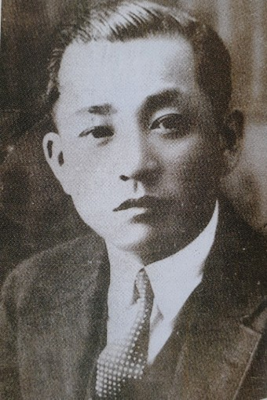

- 패션의 다양성과 즐거움
- 한국 패션의 역사와 현재
한국 패션의 역사와 현재
한국 패션의 역사
한국 패션은 수천 년간의 역사를 가지고 있습니다. 고조선 시대부터 시작되어, 고려, 조선, 일제강점기, 한국전쟁, 그리고 지금까지 이어져 왔습니다. 그 동안 한국 패션은 다양한 변화를 겪었으며, 이러한 변화는 한국의 역사와 문화, 경제적 상황과 밀접한 연관이 있습니다.
조선 시대

조선 시대에는 남성들이 주로 입던 ‘한복’이 생겨났습니다. 한복은 단정하고 심플한 디자인으로, 그러나 색감과 질감 등으로 인해 아름다움을 뽐낼 수 있었습니다. 이후 여성용 의상인 ‘조선옷’도 생겨나게 되며, 조선옷은 특별한 자수와 인장 디자인으로 유명해졌습니다.
일제강점기

일제강점기에는 외국 문화의 영향으로 한복을 입는 것이 고민스러워졌습니다. 이에 일본의 서양화 정책도 생긴 덕분에 한국인들은 서양 의류를 입으려고 하게 되었습니다. 일제강점기의 독립 운동은 한국 현대패션의 시작이 되었습니다.